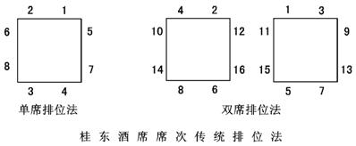

|
|
|
|
四、风俗礼仪
【春节】我国传统习俗中最隆重的节日。此节乃一岁之首。古人又称元日、元旦、元正、新春、新正等，而今人称春节，是在采用公历纪元后。古代“春节”与“春季”为同义词。春节习俗一方面是庆贺过去的一年，一方面又祈祝新年快乐、五谷丰登、人畜兴旺，多与农事有关。迎龙舞龙为取悦龙神保佑，风调雨顺；舞狮源于镇慑糟蹋庄稼、残害人畜之怪兽的传说。随着社会的发展，接神、敬天等活动已逐渐淘汰，燃鞭炮、贴春联、挂年画、耍龙灯、舞狮子、拜年贺喜等习俗至今仍广为流行。
【元宵】我国民间传统节日。又称正月半、上元节、灯节。元宵习俗有赏花灯、包饺子、闹年鼓、迎厕神、猜灯谜等。宋代始有吃元宵的习俗。元宵即圆子，用糯米粉做成实心的或带馅的圆子，可带汤吃，也可炒吃、蒸吃。
【寒食】我国民间传统节日。节日里严禁烟火，只能吃寒食。在冬至后的一百零五天或一百零六天，在清明前一、二日。相传，春秋时晋公子重耳流亡在外，大臣介子推曾割股啖之。重耳做国君后，大封功臣，独未赏介子推。子推便隐居山中。重耳闻之甚愧，为逼他出山受赏，放火烧山。子推抱木不出而被烧死。重耳遂令每年此日不得生火做饭，追念子推，表示对自己过失的谴责。因寒食与清明时间相近，后人便将寒食的风俗视为清明习俗之一。
【清明】我国民间传统节日。按农历算在三月上半月，按阳历算则在每年四月五日或六日。此时天气转暖，风和日丽，“万物至此皆洁齐而清明”，清明节由此得名。其习俗有扫墓、踏青、荡秋千、放风筝、插柳戴花等。历代文人都有以清明为题材入诗的。
【端午】我国民间传统节日。又称端阳、重午、重五。端午原是月初午日的仪式，因“五”与“午”同音，农历五月初五遂成端午节。一般认为，该节与纪念屈原有关。屈原忠而被黜，投水自尽，于是人们以吃粽子、赛龙舟等来悼念他。端午习俗有喝雄黄酒、挂香袋、吃粽子、插花和菖蒲、斗百草、驱“五毒”等。
【乞巧】我国民间传统节日。又称少女节或七夕。相传，天河东岸的织女嫁给河西的牛郎后，云锦织作稍慢，天帝大怒，将织女逐回，只许两人每年农历七月初七夜晚在鹊鸟搭成的桥上相会。或说：天上的织女嫁给了地上的牛郎，王母娘娘将织女抓回天庭，只许两人一年一度鹊桥相会。每年七月初七晚上，妇女们趁织女与牛郎团圆之际，摆设香案，穿针引线，向她乞求织布绣花的技巧。在葡萄架下，静听牛郎织女的谈话，也是七月七的一大趣事。
【中秋】我国民间传统节日。又称团圆节。农历八月在秋季之中，八月十五又在八月之中，故称中秋。秋高气爽，明月当空，故有赏月与祭月之俗。圆月带来的团圆的联想，使中秋节更加深入人心。唐代将嫦娥奔月与中秋赏月联系起来后，更富浪漫色彩。历代诗人以中秋为题材作诗的很多。中秋节的主要习俗有赏月、祭月、观潮、吃月饼等。
【重阳】我国民间传统节日。《易经》将“九”定为阳数，两九相重，故农历九月初九为“重阳”。重阳时节，秋高气爽，风清月洁，故有登高望远、赏菊赋诗、喝菊花酒、插茱萸等习俗。唐人有“遍插茱萸少一人”的诗句。
【腊日】我国民间传统节日。这是古代岁末祭祀祖先、祭拜众神、庆祝丰收的节日。腊日通常在每年的最后——个月(腊月)举行，南北朝时腊日已固定在农历十二月初八。有吃赤豆粥、祭拜祖先等习俗。佛教的腊八粥后也渗入腊日习俗。
【除夕】我国民间传统节日。农历十二月三十日晚，家家在打扫一清的屋里，摆上丰盛的菜肴，全家团聚吃“年饭”。此夜大家通宵不眠，或喝酒聊天，或猜谜下棋，嬉戏游乐，谓之“守岁”。零点时，众人争相奔出，在庭前拢火燃烧(古称“庭燎”，取其兴旺之意)，并在这“岁之元，月之元，时之元”的“三元”之时抢先放出三个“冲天炮”，以求首先发达，大吉大利。此时，爆竹声、欢叫声响成一片，一派“爆竹声中除旧岁”的景象。
【伯(孟)仲叔季】兄弟行辈中长幼排行的次序。伯(孟)是老大，仲是老二，叔是老三，季是老四。古代贵族男子的字前常加伯(孟)、仲、叔、季表示排行，字的后面加“父”或“甫”字表示男性，构成男子字的全称，如伯禽父、仲尼父、叔兴父等。
【十二生肖】又称属相。古代术数家拿十二种动物来配十二地支，子为鼠，丑为牛，寅为虎，卯为兔，辰为龙，巳为蛇，午为马，未为羊，申为猴，酉为鸡，戌为狗，亥为猪。后以为某人生在某年就肖某物，如子年生的肖鼠，亥年生的肖猪，称为十二生肖。在古代，十二生肖常被涂上迷信色彩，一遇休戚祸福，往往牵扯起来，特别是在婚配中男女属相很有讲究，有所谓“鸡狗断头婚”、“龙虎不相容”等说法。
【生辰八字】一个人出生的年、月、日、时，各有天干、地支相配，每项两个字，四项共八个字。根据这八个字，可推算出一个人的命运。遇有大事，都需推算八字。旧俗订婚时，男女双方互换庚帖，上有生辰八字。双方各自卜问对方的生辰八字命相阴阳，以确定能否成婚，吉凶如何。
【孝悌】孝，指对父母要孝顺、服从；悌，指对兄长要敬重、顺从。孔子非常重视孝悌，把孝悌作为实行“仁”的根本，提出“三年无改于父道”、“父母在，不远游”等一系列孝悌主张。孟子也把孝悌视为基本的道德规范。秦汉时的《孝经》则进一步提出：“孝为百行之首。”儒家提倡孝悌的目的，是为了维护宗法等级秩序。
【牺牲】古代祭祀用的牲畜，色纯为“牺”，体全为“牲”。《左传·曹刿论战》中有这样的话：“牺牲玉帛，弗敢加也，必以信。”
【三牲】一指古代用于祭祀的牛、羊、猪，后来也称鸡、鱼、猪为三牲。一指夏、商、周三代所用牺牲的总称。
【太牢、少牢】古代帝王祭祀社稷时，牛、羊、豕(shi，猪)三牲全备为“太牢”。古代祭祀所用牺牲，行祭前需先饲养于牢，故这类牺牲称为牢；又根据牺牲搭配的种类不同而有太牢、少牢之分。少牢只有羊、豕，没有牛。由于祭祀者和祭祀对象不同，所用牺牲的规格也有所区别：天子祭祀社稷用太牢，诸侯祭祀用少牢。
【家祭】古人在家庙内祭祀祖先或家族守护神的礼仪。唐代即有专人制订家祭礼仪，相沿施行。宋代陆游《示儿》诗中有这么两句：“王师北定中原日，家祭无忘告乃翁。”
【朝仪】古代帝王临朝的典礼。按规定：天子面向南，三公面向北以东为上，孤面向东以北为上，卿大夫面向西以北为上，王族在路门右侧，面向南以东为上，大仆大右及大仆的属官在路门左侧，面向南以西为上。朝仪之位已定，天子和臣子行揖礼，礼毕退朝。后世也称人臣朝君之礼仪为“朝仪”。
【朝聘】古代宾礼之一。为诸侯定期朝见天子的礼制。诸侯朝见天子有三种形式：每年派大夫朝见天子称为“小聘”；每隔三年派卿朝见天子为“大聘”；每隔五年亲自朝见天子为“朝”。
【朝觐】古代宾礼之一。为周代诸侯朝见天子的礼制。诸侯朝见天子，“春见曰朝，秋见曰觐”，此为定期朝见。春秋两季朝见天子，合称为朝觐。
【揖让】一指古代宾主相见的礼节。揖让之礼按尊卑分为三种，称为三揖：一为土揖，专用于没有婚姻关系的异姓，行礼时推手微向下；二为时揖，专用于有婚姻关系的异姓，行礼时推手平而致于前；三为天揖，专用于同姓宾客，行礼时推手微向上。一指禅让，即让位于比自己更贤能的人。
【长揖】这是古时不分尊卑的相见礼，拱手高举，自上而下。
【拱】古代的一种相见礼，两手在胸前相合表示敬意。《论语·微子》中有这样的记载：“子路拱而立。”
【顿首】古时一种拜礼，为“九拜”之一，俗称叩头。行礼时，头碰地即起。因其头接触地面时间短暂，故称顿首。通常用于下对上及平辈间的敬礼，如官僚间的拜迎、拜送，民间的拜贺、拜望、拜别等。也常用于书信中的起头或末尾，如丘迟《与陈伯之书》：“迟顿首。陈将军足下无恙，幸甚幸甚……丘迟顿首。”
【稽首】古代的拜礼，为“九拜”之一。行礼时，施礼者屈膝跪地，左手按右手，拱手于地，头也缓缓至于地。头至地须停留一段时间，手在膝前，头在手后。这是九拜中最隆重的拜礼，常为臣子拜见君王时所用。后来，子拜父，拜天拜神，新婚夫妇拜天地父母，拜祖拜庙，拜师，拜墓等，也都用此大礼。
【九拜】我国古代特有的向对方表示崇高敬意的跪拜礼。《周礼》谓“九拜”：“一曰稽首，二曰顿首，三日空首，四曰振动，五日吉拜，六日凶拜，七日奇拜，八日褒拜，九曰肃拜。”这是不同等级、不同身份的社会成员，在不同场合所使用的规定礼仪。
【跪】两膝着地，挺直身子，臀不沾脚跟，以示庄重。如《廉颇蔺相如列传》：“于是相如前进瓿，因跪请秦王。”
【坐】古代席地而坐，坐时两膝着地，臀部贴于脚跟。为了表示对人尊重，坐法颇有讲究：“虚坐尽后，食坐尽前。”“尽后”是尽量让身体坐后一点，以表谦恭；“尽前”是尽量把身体往前挪，以免饮食污染坐席而对人不敬。
【座次】古时官场座次尊卑有别，十分严格。官高为尊居上位，官低为卑处下位。古人尚右，以右为尊，“左迁”即表示贬官。《廉颇蔺相如列传》：“以相如功大，拜为上卿，位在廉颇之右。”古代建筑通常是堂室结构，前堂后室。在堂上举行的礼节活动是南向为尊。皇帝聚会群臣，他的座位一定是坐北向南的。因此，古人常把称王称帝叫做“南面”，称臣叫做“北面”。室东西长而南北窄，因此室内最尊的座次是坐西面东，其次是坐北向南，再次是坐南面北，最卑是坐东面西。《鸿门宴》中有这样几句：“项王、项伯东向坐，亚父南向坐，……沛公北向坐，张良西向侍。”项王座次最尊，张良座次最卑。
【席次】古代宴会席次，尊卑很有讲究。一般筵席用的是八仙桌，桌朝大门，其位次如下：位尊者居前，8是主人席位。如果客多，可设两桌、三桌或更多，有上桌与散座的区别：上桌与单席的位次相同，散座则不分席次。
 【冠礼】古代男子成年时(二十岁)加冠的礼节。冠礼在宗庙中进行，由父亲主持，并由指定的贵宾给行冠礼的青年加冠三次，先后加缁布冠、皮弁、爵弁，分别表示有治人、为国出力、参加祭祀的权力。加冠后，由贵宾向冠者宣读祝辞，并给起一个与俊士德行相当的美“字”，使他成为受人尊敬的贵族成员。因为男子二十岁行冠礼，所以后世将二十岁称作“弱冠”。
【婚冠礼】古代嘉礼之一。《周礼》：“以婚冠之礼亲成男女。”古代贵族男子二十岁行冠礼后即可成婚，并享受成人待遇，女子十五岁行笄礼(笄：束发用的簪子。古时女子满十五岁把头发绾起来，戴上簪子)后也可结婚。所以把婚礼、冠礼合称为婚冠礼。
【祖道】古代为出行者祭祀路神和设宴送行的礼仪。《汉书》载，西汉将领李广利率军队出击匈奴之前，“丞相为祖道，送至渭桥”。《荆轲刺秦王》：“至易水上，既祖，取道。”文中的“祖”就是“祖道”，临行祭路神，引申为饯行送别。
【斋戒】古代祭祀或重大事件，事先要沐浴、更衣、独居，戒其嗜欲，以示心地诚敬，这些活动叫“斋戒”。“斋”又称“致斋”，致斋三日，宿于内室，要求“五思”(思其居处、笑语、志意、所乐、所嗜)，这主要是为了使思想集中、统一。“戒”又称“散斋”，散斋七日，宿于外室，停止参加一切娱乐活动，也不参加哀吊丧礼，以防“失正”、“散思”。古人斋戒时忌荤，但并非忌食鱼肉荤腥，而是忌食有辛味臭气的食物如葱、蒜等，这主要是为了防止祭祀时口中发出的臭气，对神灵、祖先有所亵渎。
【虚左】古代座次以左为尊，空着左边的位置以待宾客称“虚左”。《信陵君窃符救赵》：“公子于是乃置酒大会宾客。坐定，公子从车骑，虚左，自迎夷门侯生。”足见信陵君对侯生之尊敬。今人有“虚左以待”一语。
【再拜】先后拜两次，表示礼节之隆重。旧时书信末尾也常用“再拜”，以表示敬意。
【膜拜】古代的拜礼。行礼时，两手放在额上，长时间下跪叩头。原专指礼拜神佛时的一种敬礼，后泛指表示极端恭敬或畏服的行礼方式。今人多用“顶礼膜拜”形容对某人崇拜得五体投地。
【折腰】即拜揖。鞠躬下拜，表示屈辱之意。《晋书·陶潜传》载：陶渊明曾为彭泽县令，州郡派督邮巡视至县，县吏劝陶束带迎见，他感叹地说：“吾不能为五斗米折腰，拳拳事乡里小人邪!”李白《梦游天姥吟留别》：“安能摧眉折腰事权贵，使我不得开心颜?”后来引申为倾倒、崇拜，如毛泽东《沁园春·雪》：“江山如此多娇，引无数英雄竞折腰。”
【六礼】中国古代婚姻的六种手续和礼仪，即纳采、问名、纳吉、纳征、请期、亲迎。
【秦晋之好】春秋时，秦、晋两国国君几代都互相通婚，后称两姓联姻为“秦晋之好”。
【举案齐眉】古代妻子为丈夫捧膳食时要举案于眉，表示相敬。
【以文会友】古代文人交往、交友的礼俗。文人相交轻财物而重情谊、才学，故多以诗文相赠答，扬才露己，以表心态。唱酬是通行的方式，即以诗词相酬答。在宴饮等聚会时，更是不可有酒无诗，流行尽觞赋诗之俗。
【讳称】古人对“死”有许多讳称，主要的有：
(1)天子、太后、公卿王侯之死称：薨、崩、百岁、千秋、晏驾、山陵崩等。
(2)父母之死称：见背、孤露、弃养等。
(3)佛道徒之死称：涅檠、圆寂、坐化、羽化、仙游、仙逝等。“仙逝”现也用于称被人尊敬的人物的死。
(4)一般人的死称：亡故、长眠、长逝、过世、谢世、寿终、殒命、捐生、就木、溘逝、老、故、逝、终等。 |
|
|
|
|
|
|